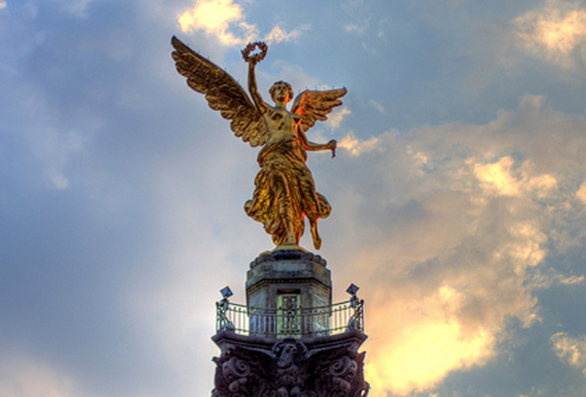
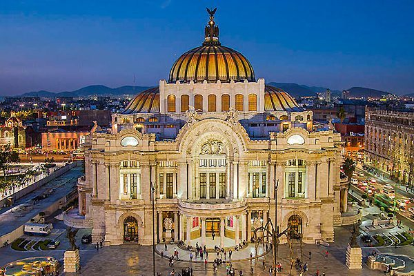
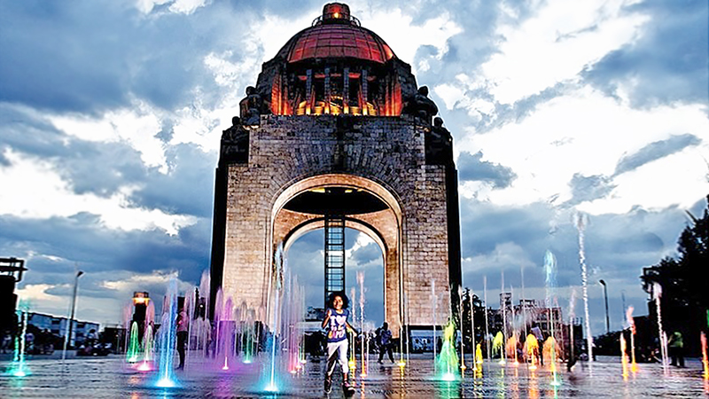

Angel of Independence
The Angel of Independence, most commonly known by the shortened name El Ángel and officially known as Monumento a la Independencia ("Monument to Independence"), is a victory column on a roundabout on the major thoroughfare of Paseo
de la Reforma in downtown Mexico City. El Ángel was built in 1910 during the presidency of Porfirio Díaz by architect Antonio Rivas Mercado, to commemorate the centennial of the beginning of Mexico's War of Independence. In later
years it was made into a mausoleum for the most important heroes of that war. It is one of the most recognizable landmarks in Mexico City, and it has become a focal point for both celebration or protest. It resembles the July Column
in Paris and the Berlin Victory Column in Berlin.

Palace of Fine Arts
The Palacio de Bellas Artes (Palace of Fine Arts) is a prominent cultural center in Mexico City. It has hosted some of the most notable events in music, dance, theatre, opera and literature and has held important exhibitions of painting,
sculpture and photography. Consequently, the Palacio de Bellas Artes has been called the "Cathedral of Art in Mexico". The building is located on the western side of the historic center of Mexico City next to the Alameda Central
park.

Monument to the Revolution
The Monument to the Revolution (Spanish: Monumento a la Revolución) is a landmark and monument commemorating the Mexican Revolution.The building was initially planned as the Federal Legislative Palace during the regime of president
Porfirio Díaz and "was intended as the unequaled monument to Porfirian glory."The building would hold the deputies and senators congress chambers, but the project was not finished due to the war of Mexican Revolution. Twenty-five
years later, the structure was converted into a monument to the Mexican Revolution by Mexican architect Carlos Obregón Santacilia. The monument is considered the tallest triumphal arch in the world, it stands 67 metres (220 ft)
in height